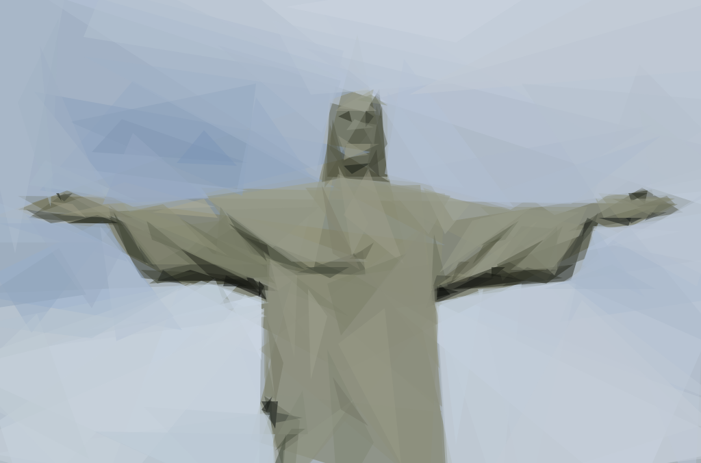
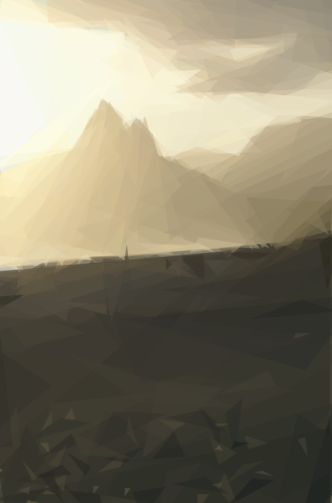
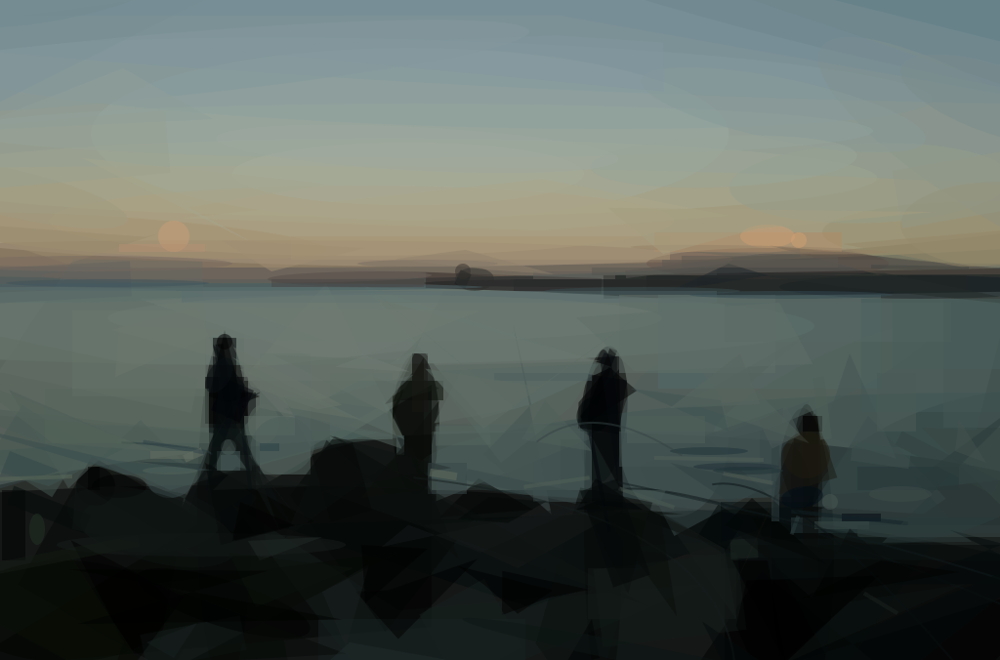
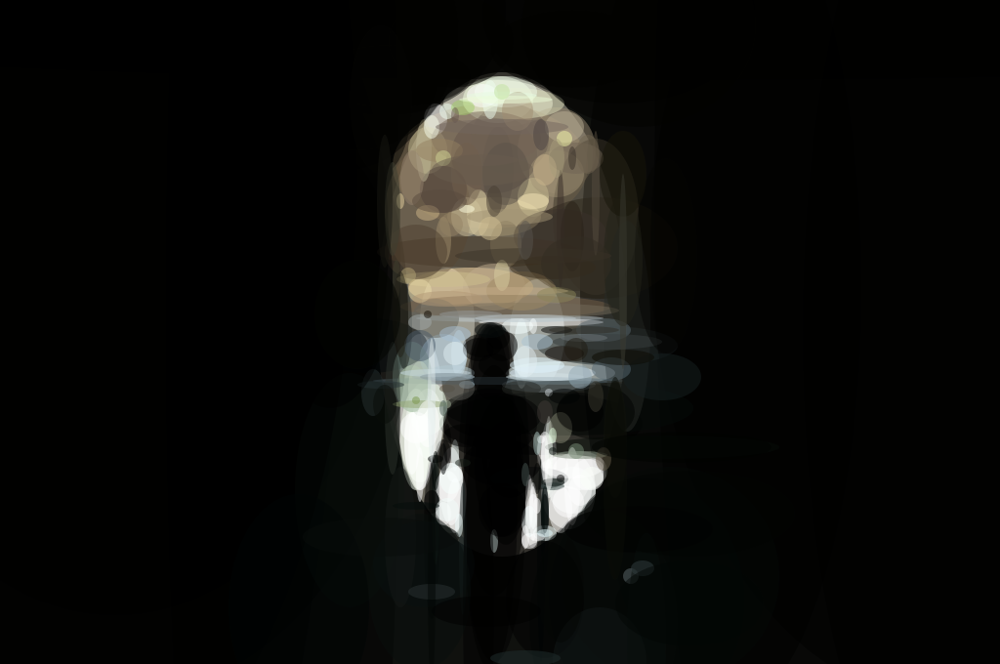

1
Cockatoo
Rendered with 300 assorted shapes, 8kB

2
Cristo Redentor
Rendered with 200 triangles, 3kB

3
Ipanema Beach
Rendered with 200 triangles, 3kB

4
Fishing at Lago Llanquihue
Rendered with 300 assorted shapes, 7kB

5
Swan View Tunnel
Rendered with 300 ellipses, 3kB
